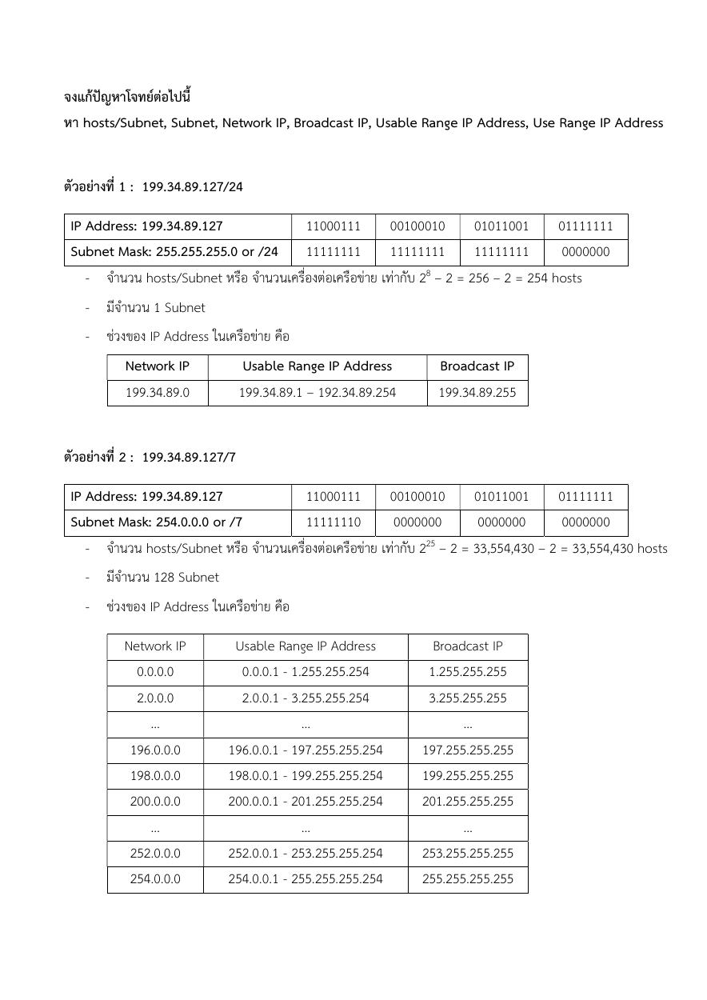
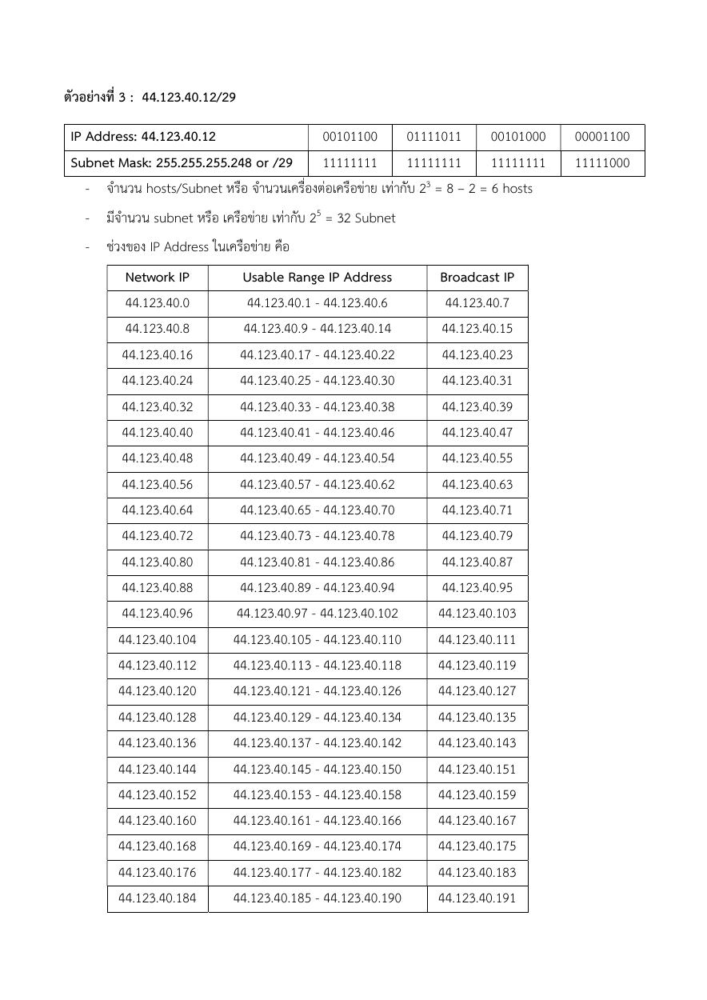
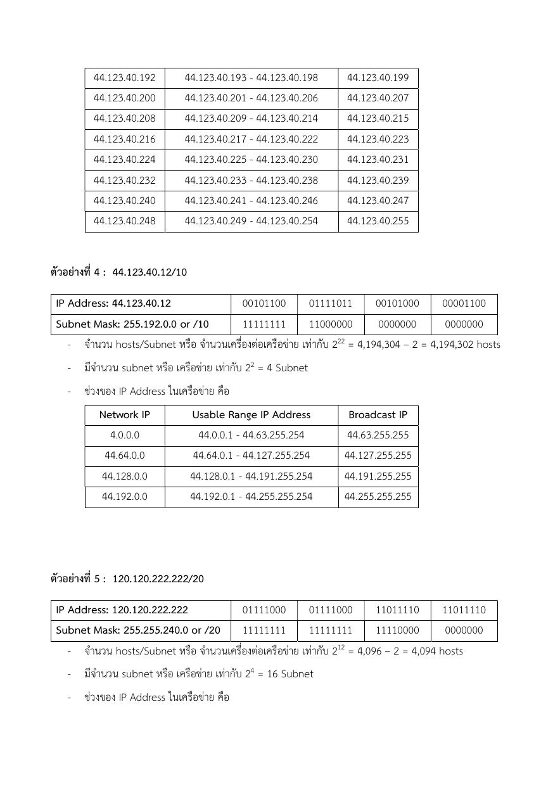
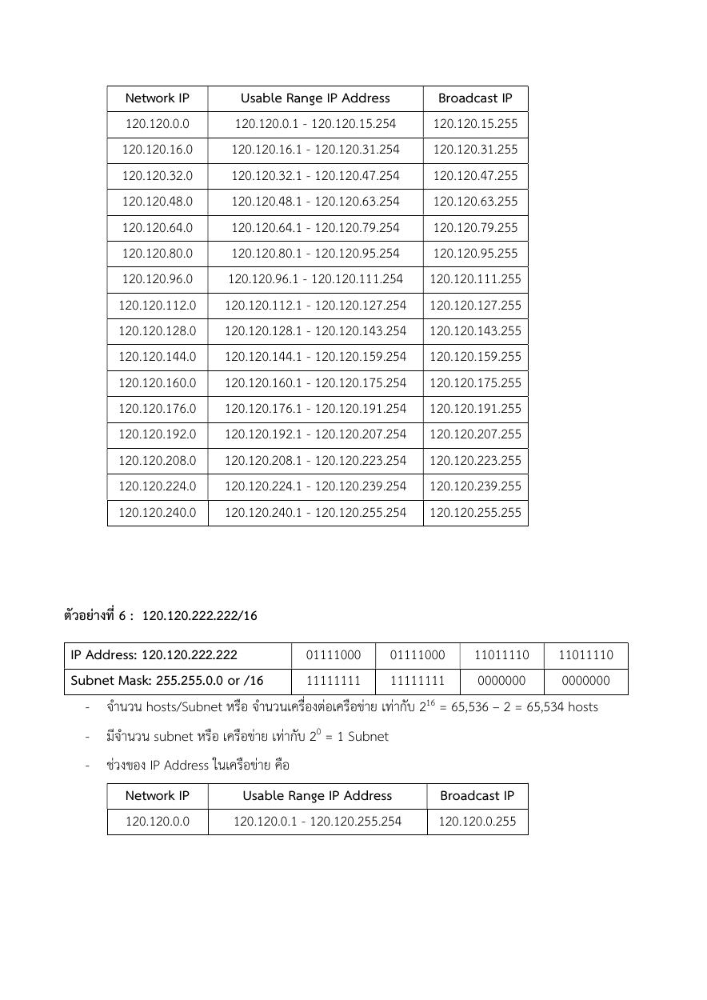
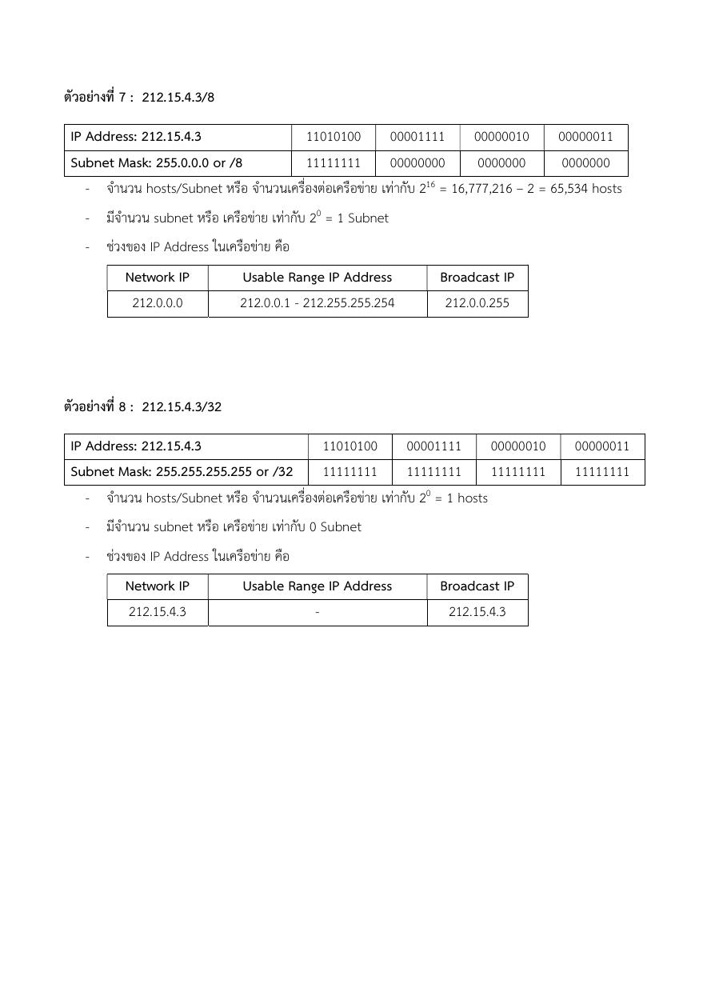

หน้า 1 — จงแกปญหาโจทยตอไปนี้
ดูภาพต้นฉบับหน้า 1

คลิกภาพเพื่อเปิดขยาย
อ่านข้อความต้นฉบับที่สกัดได้ (ไทย/อังกฤษตามไฟล์)
จงแกปญหาโจทยตอไปนี้
หา hosts/Subnet, Subnet, Network IP, Broadcast IP, Usable Range IP Address, Use Range IP Address
ตัวอยางที่ 1 : 199.34.89.127/24
IP Address: 199.34.89.127 11000111 00100010 01011001 01111111
Subnet Mask: 255.255.255.0 or /24 11111111 11111111 11111111 0000000
- จํานวน hosts/Subnet หรือ จํานวนเครื่องตอเครือขาย เทากับ 28 – 2 = 256 – 2 = 254 hosts
- มีจํานวน 1 Subnet
- ชวงของ IP Address ในเครือขาย คือ
Network IP Usable Range IP Address Broadcast IP
199.34.89.0 199.34.89.1 – 192.34.89.254 199.34.89.255
ตัวอยางที่ 2 : 199.34.89.127/7
IP Address: 199.34.89.127 11000111 00100010 01011001 01111111
Subnet Mask: 254.0.0.0 or /7 11111110 0000000 0000000 0000000
- จํานวน hosts/Subnet หรือ จํานวนเครื่องตอเครือขาย เทากับ 225 – 2 = 33,554,430 – 2 = 33,554,430 hosts
- มีจํานวน 128 Subnet
- ชวงของ IP Address ในเครือขาย คือ
Network IP Usable Range IP Address Broadcast IP
0.0.0.0 0.0.0.1 - 1.255.255.254 1.255.255.255
2.0.0.0 2.0.0.1 - 3.255.255.254 3.255.255.255
… … …
196.0.0.0 196.0.0.1 - 197.255.255.254 197.255.255.255
198.0.0.0 198.0.0.1 - 199.255.255.254 199.255.255.255
200.0.0.0 200.0.0.1 - 201.255.255.254 201.255.255.255
… … …
252.0.0.0 252.0.0.1 - 253.255.255.254 253.255.255.255
254.0.0.0 254.0.0.1 - 255.255.255.254 255.255.255.255ทบทวนภาษาไทย: ติว Subnetting แบบละเอียด พร้อมแก้ค่าคลาดเคลื่อนในต้นฉบับIPv4, IPv6, CIDR และการแบ่ง Subnet
กลับสารบัญ ↑หน้า 2 — ตัวอยางที่ 3 : 44.123.40.12/29
ดูภาพต้นฉบับหน้า 2

คลิกภาพเพื่อเปิดขยาย
อ่านข้อความต้นฉบับที่สกัดได้ (ไทย/อังกฤษตามไฟล์)
ตัวอยางที่ 3 : 44.123.40.12/29
IP Address: 44.123.40.12 00101100 01111011 00101000 00001100
Subnet Mask: 255.255.255.248 or /29 11111111 11111111 11111111 11111000
- จํานวน hosts/Subnet หรือ จํานวนเครื่องตอเครือขาย เทากับ 23 = 8 – 2 = 6 hosts
- มีจํานวน subnet หรือ เครือขาย เทากับ 25 = 32 Subnet
- ชวงของ IP Address ในเครือขาย คือ
Network IP Usable Range IP Address Broadcast IP
44.123.40.0 44.123.40.1 - 44.123.40.6 44.123.40.7
44.123.40.8 44.123.40.9 - 44.123.40.14 44.123.40.15
44.123.40.16 44.123.40.17 - 44.123.40.22 44.123.40.23
44.123.40.24 44.123.40.25 - 44.123.40.30 44.123.40.31
44.123.40.32 44.123.40.33 - 44.123.40.38 44.123.40.39
44.123.40.40 44.123.40.41 - 44.123.40.46 44.123.40.47
44.123.40.48 44.123.40.49 - 44.123.40.54 44.123.40.55
44.123.40.56 44.123.40.57 - 44.123.40.62 44.123.40.63
44.123.40.64 44.123.40.65 - 44.123.40.70 44.123.40.71
44.123.40.72 44.123.40.73 - 44.123.40.78 44.123.40.79
44.123.40.80 44.123.40.81 - 44.123.40.86 44.123.40.87
44.123.40.88 44.123.40.89 - 44.123.40.94 44.123.40.95
44.123.40.96 44.123.40.97 - 44.123.40.102 44.123.40.103
44.123.40.104 44.123.40.105 - 44.123.40.110 44.123.40.111
44.123.40.112 44.123.40.113 - 44.123.40.118 44.123.40.119
44.123.40.120 44.123.40.121 - 44.123.40.126 44.123.40.127
44.123.40.128 44.123.40.129 - 44.123.40.134 44.123.40.135
44.123.40.136 44.123.40.137 - 44.123.40.142 44.123.40.143
44.123.40.144 44.123.40.145 - 44.123.40.150 44.123.40.151
44.123.40.152 44.123.40.153 - 44.123.40.158 44.123.40.159
44.123.40.160 44.123.40.161 - 44.123.40.166 44.123.40.167
44.123.40.168 44.123.40.169 - 44.123.40.174 44.123.40.175
44.123.40.176 44.123.40.177 - 44.123.40.182 44.123.40.183
44.123.40.184 44.123.40.185 - 44.123.40.190 44.123.40.191ทบทวนภาษาไทย: ติว Subnetting แบบละเอียด พร้อมแก้ค่าคลาดเคลื่อนในต้นฉบับIPv4, IPv6, CIDR และการแบ่ง Subnet
กลับสารบัญ ↑หน้า 3 — 44.123.40.192 44.123.40.193 - 44.123.40.198 44.123.40.199
ดูภาพต้นฉบับหน้า 3

คลิกภาพเพื่อเปิดขยาย
อ่านข้อความต้นฉบับที่สกัดได้ (ไทย/อังกฤษตามไฟล์)
44.123.40.192 44.123.40.193 - 44.123.40.198 44.123.40.199
44.123.40.200 44.123.40.201 - 44.123.40.206 44.123.40.207
44.123.40.208 44.123.40.209 - 44.123.40.214 44.123.40.215
44.123.40.216 44.123.40.217 - 44.123.40.222 44.123.40.223
44.123.40.224 44.123.40.225 - 44.123.40.230 44.123.40.231
44.123.40.232 44.123.40.233 - 44.123.40.238 44.123.40.239
44.123.40.240 44.123.40.241 - 44.123.40.246 44.123.40.247
44.123.40.248 44.123.40.249 - 44.123.40.254 44.123.40.255
ตัวอยางที่ 4 : 44.123.40.12/10
IP Address: 44.123.40.12 00101100 01111011 00101000 00001100
Subnet Mask: 255.192.0.0 or /10 11111111 11000000 0000000 0000000
- จํานวน hosts/Subnet หรือ จํานวนเครื่องตอเครือขาย เทากับ 222 = 4,194,304 – 2 = 4,194,302 hosts
- มีจํานวน subnet หรือ เครือขาย เทากับ 22 = 4 Subnet
- ชวงของ IP Address ในเครือขาย คือ
Network IP Usable Range IP Address Broadcast IP
4.0.0.0 44.0.0.1 - 44.63.255.254 44.63.255.255
44.64.0.0 44.64.0.1 - 44.127.255.254 44.127.255.255
44.128.0.0 44.128.0.1 - 44.191.255.254 44.191.255.255
44.192.0.0 44.192.0.1 - 44.255.255.254 44.255.255.255
ตัวอยางที่ 5 : 120.120.222.222/20
IP Address: 120.120.222.222 01111000 01111000 11011110 11011110
Subnet Mask: 255.255.240.0 or /20 11111111 11111111 11110000 0000000
- จํานวน hosts/Subnet หรือ จํานวนเครื่องตอเครือขาย เทากับ 212 = 4,096 – 2 = 4,094 hosts
- มีจํานวน subnet หรือ เครือขาย เทากับ 24 = 16 Subnet
- ชวงของ IP Address ในเครือขาย คือทบทวนภาษาไทย: ติว Subnetting แบบละเอียด พร้อมแก้ค่าคลาดเคลื่อนในต้นฉบับIPv4, IPv6, CIDR และการแบ่ง Subnet
กลับสารบัญ ↑หน้า 4 — Network IP Usable Range IP Address Broadcast IP
ดูภาพต้นฉบับหน้า 4

คลิกภาพเพื่อเปิดขยาย
อ่านข้อความต้นฉบับที่สกัดได้ (ไทย/อังกฤษตามไฟล์)
Network IP Usable Range IP Address Broadcast IP
120.120.0.0 120.120.0.1 - 120.120.15.254 120.120.15.255
120.120.16.0 120.120.16.1 - 120.120.31.254 120.120.31.255
120.120.32.0 120.120.32.1 - 120.120.47.254 120.120.47.255
120.120.48.0 120.120.48.1 - 120.120.63.254 120.120.63.255
120.120.64.0 120.120.64.1 - 120.120.79.254 120.120.79.255
120.120.80.0 120.120.80.1 - 120.120.95.254 120.120.95.255
120.120.96.0 120.120.96.1 - 120.120.111.254 120.120.111.255
120.120.112.0 120.120.112.1 - 120.120.127.254 120.120.127.255
120.120.128.0 120.120.128.1 - 120.120.143.254 120.120.143.255
120.120.144.0 120.120.144.1 - 120.120.159.254 120.120.159.255
120.120.160.0 120.120.160.1 - 120.120.175.254 120.120.175.255
120.120.176.0 120.120.176.1 - 120.120.191.254 120.120.191.255
120.120.192.0 120.120.192.1 - 120.120.207.254 120.120.207.255
120.120.208.0 120.120.208.1 - 120.120.223.254 120.120.223.255
120.120.224.0 120.120.224.1 - 120.120.239.254 120.120.239.255
120.120.240.0 120.120.240.1 - 120.120.255.254 120.120.255.255
ตัวอยางที่ 6 : 120.120.222.222/16
IP Address: 120.120.222.222 01111000 01111000 11011110 11011110
Subnet Mask: 255.255.0.0 or /16 11111111 11111111 0000000 0000000
- จํานวน hosts/Subnet หรือ จํานวนเครื่องตอเครือขาย เทากับ 216 = 65,536 – 2 = 65,534 hosts
- มีจํานวน subnet หรือ เครือขาย เทากับ 20 = 1 Subnet
- ชวงของ IP Address ในเครือขาย คือ
Network IP Usable Range IP Address Broadcast IP
120.120.0.0 120.120.0.1 - 120.120.255.254 120.120.0.255ทบทวนภาษาไทย: ติว Subnetting แบบละเอียด พร้อมแก้ค่าคลาดเคลื่อนในต้นฉบับIPv4, IPv6, CIDR และการแบ่ง Subnet
กลับสารบัญ ↑หน้า 5 — ตัวอยางที่ 7 : 212.15.4.3/8
ดูภาพต้นฉบับหน้า 5

คลิกภาพเพื่อเปิดขยาย
อ่านข้อความต้นฉบับที่สกัดได้ (ไทย/อังกฤษตามไฟล์)
ตัวอยางที่ 7 : 212.15.4.3/8
IP Address: 212.15.4.3 11010100 00001111 00000010 00000011
Subnet Mask: 255.0.0.0 or /8 11111111 00000000 0000000 0000000
- จํานวน hosts/Subnet หรือ จํานวนเครื่องตอเครือขาย เทากับ 216 = 16,777,216 – 2 = 65,534 hosts
- มีจํานวน subnet หรือ เครือขาย เทากับ 20 = 1 Subnet
- ชวงของ IP Address ในเครือขาย คือ
Network IP Usable Range IP Address Broadcast IP
212.0.0.0 212.0.0.1 - 212.255.255.254 212.0.0.255
ตัวอยางที่ 8 : 212.15.4.3/32
IP Address: 212.15.4.3 11010100 00001111 00000010 00000011
Subnet Mask: 255.255.255.255 or /32 11111111 11111111 11111111 11111111
- จํานวน hosts/Subnet หรือ จํานวนเครื่องตอเครือขาย เทากับ 20 = 1 hosts
- มีจํานวน subnet หรือ เครือขาย เทากับ 0 Subnet
- ชวงของ IP Address ในเครือขาย คือ
Network IP Usable Range IP Address Broadcast IP
212.15.4.3 - 212.15.4.3ทบทวนภาษาไทย: ติว Subnetting แบบละเอียด พร้อมแก้ค่าคลาดเคลื่อนในต้นฉบับIPv4, IPv6, CIDR และการแบ่ง Subnet
กลับสารบัญ ↑